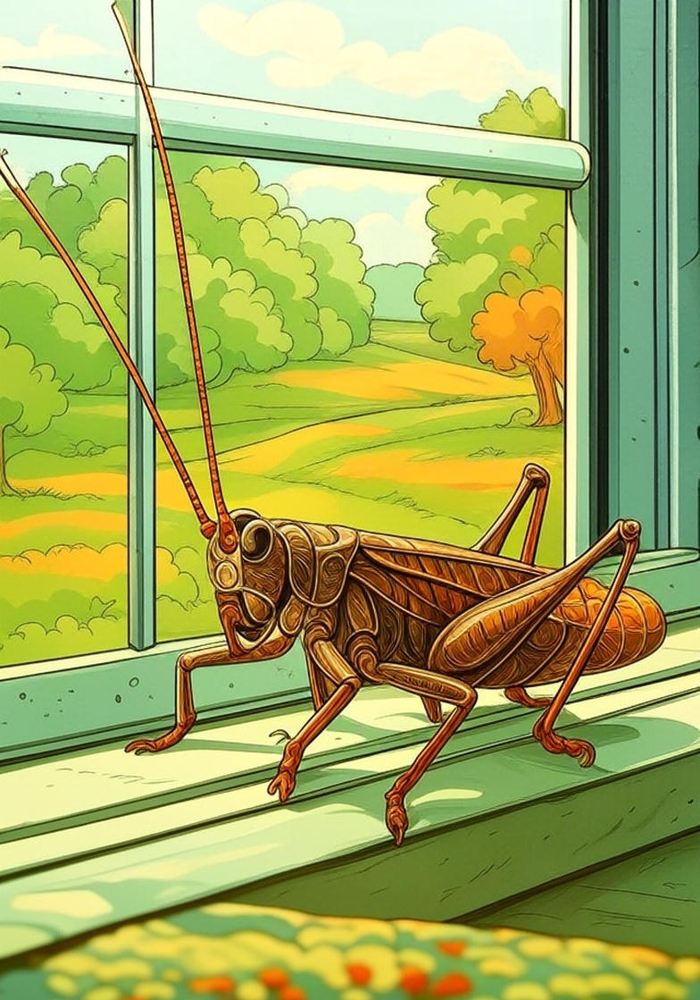

A téli tücsök szomorúan üldögélt az ablakpárkányon. Igazában nem is tudta, hogy mitől szomorú, úgy értem, hogy nem tudta volna pontosan megmondani, hogy mitől szomorú, csak szomorú volt, és nem volt semmihez kedve. Még az írógépet is kikerülte, annyira szomorú volt, mikor felugrott az ablakpárkányra, még az írógép billentyűjét lenyomni sem volt kedve.
Ült szemben a fehér világgal, a behavazott háztetőkkel, ágakkal, villanydróttal, csak ült szemben, és nagyokat sóhajtozott.
Nem tudott beletörődni, hogy téli tücsök lett, magányos téli tücsök. Mikor már eleget sóhajtozott, törni kezdte a fejét, hogy mit csináljon.
– Mit csináljak, hogy ne legyek szomorú? Mit is csináljak?
Ám a fehér, behavazott világ nem válaszolt neki semmit, csak hullt a hó, és még fehérebb lett minden.
– Mégis lenyomok egy billentyűt! – határozta el magát a téli tücsök. – Az is valami, ha ugrok egyet! Mint régen, mikor még egész nap ugrándoztam.
És a téli tücsök odament az írógéphez, s lenyomott egy billentyűt.
A billentyű lenyomódott, a kar rácsapódott a fehér papírra. A fehér papíron egy újabb jel volt, a téli tücsök felmászott az írógépre, és megnézte.
I – ez volt a fehér papíron.
A téli tücsök tűnődött, töprengett, hogy mire is emlékezteti őt ez a fura jel a fehér papíron.
Mire is? Mire is?

S aztán felderült az arca, a szomorúsága elmúlt, mintha elfújták volna, mert eszébe jutott, hogy mire is emlékezteti a fura jel a fehér papíron.
Hát persze! A délceg hőscincérre, mikor a fejére esett a makk!
Az egész úgy kezdődött, hogy a délceg hőscincér egyszer csak megjelent a szigeten. Senki se tudta, hogy miként került oda, egyszer csak ott állt a szigeten, megpödörte hatalmas bajszát, és fennhéjázva ezt mondta:
– Na! Szép kis sziget, mondhatom! Csupa gyáva nyúl meg gyáva egér meg gyáva tücsök! A többiről nem is beszélve!
A gyáva nyulak, a gyáva egerek, a gyáva tücskök meg a többiek, akikről nem is érdemes beszélni, ámulva állták körül a bajszát pödrő délceg hőscincért.
A délceg hőscincér megvetően körülnézett az ámulva bámuló társaságon, és fennhéjázó hangon tovább folytatta a szónoklatot:
– Na! Megkukultatok? Eh! De azért mégis elmondom, hogy ki vagyok, mivel itt fogok élni a szigeten, és azt akarom, hogy mindnyájan tisztában legyetek a hőstetteimmel, vagyis, hogy jól az agyatokba véssétek, és földig hajolva tiszteljetek!
Az ámulva bámuló gyáva nyulak, gyáva egerek, gyáva tücskök meg a többiek, akikről nem is érdemes beszélni, csupa fül voltak, ahogy mondani szokás, vagyis a lélegzetüket is visszafojtották, úgy figyeltek.
A délceg hőscincér elégedetten nézett rájuk, tetszett neki, hogy azok még a lélegzetüket is visszafojtják, úgy figyelnek. – Na, figyeljetek ide, ti világ gyávái!
A világ gyávái, ha lehet, még jobban figyeltek.
– Először is ott kezdem, hogy én vagyok a legbátrabb, legerősebb, legokosabb, legszebb, leggyorsabb, legügyesebb, legdélcegebb hőscincér! Eddig világos? A világ gyávái szaporán bólogattak, hogy eddig világos.
– Na, azért mondom, hogy ne kelljen magatoktól kitalálni, abba beletelne egy év is, amilyen buták vagytok! Másodszor: én idáig legyőztem mindenkit! Úgymint az oroszlánt, a medvét, a tigrist, a kőszáli sast, a héját, a leopárdot, a legharapósabb harapós kutyát, az óriáskígyót; van még több is, csak most nem jut az eszembe. De hogy ne gyötörjön benneteket a kíváncsiság, összefoglalom: én idáig mindenkit legyőztem! Ez is világos?
Az ámulva bámuló gyáva nyulak, gyáva egerek, gyáva tücskök és a többiek, akikről nem is érdemes beszélni, pislogva bólogattak, hogy ez is világos. A délceg hőscincér pödört egyet a bajuszán, és így folytatta:
– Na, most egypár szót külön a testi erőmről! Én olyan erős vagyok, hogy fél kézzel felemelem a legnehezebb követ is! Vagy: fél kézzel vizet préselek a legkeményebb kőből is! Vagy: fél kézzel kidöntöm a legnagyobb fát is! Vagy: fél kézzel csomót kötök a legnagyobb óriáskígyóra is! Ennyi elég mutatóba?
Az ámulva bámuló világ gyávái lelkesen bólogattak, hogy ennyi elég mutatóba! A délceg hőscincér megpödörte a bajuszát, és így folytatta:
– Na, most külön pár szót a gyorsaságomról! Én versenyfutásban lehagyom a leggyorsabb vadlovat! Én gyorsabban futok, mint a leopárd! Én gyorsabb vagyok, mint a vipera! Én a szélnek egy kilométer előnyt is adok, vagy annyit, amennyit akar, s mégis lehagyom! Ugye, csodálkoztok, fityfirittyek? Az ámulva bámuló fityfirittyek szájtátva csodálkoztak. A délceg hőscincérnek szemlátomást tetszett az ámulva bámuló társaság, mert pödört még egyet a bajuszán, és felemelte a hangját. – Na, most külön kell beszélnem a bátorságomról! Én olyan bátor vagyok, de olyan bátor vagyok…
Nem lehet tudni, hogy történhetett, de ekkor a fáról, amely alatt a bajuszát pödrő délceg hőscincér állt, mondom, a fáról lepottyant egy makk. Éspedig pontosan a délceg hőscincér fejére! Mindenkiben elállt a lélegzet, hogy jaj, most mi lesz!
Mi lett? Hát mi lett? Az lett, hogy a délceg hőscincér a fejéhez kapott, és sírva fakadt.
– Ki volt az? Ki dobott meg a makkal? – siránkozott a fejét tapogatva. – Segítség! Valaki megdobott makkal!
A gyáva nyulak, a gyáva egerek, a gyáva tücskök meg a többiek, akikről nem is érdemes beszélni, döbbenten nézték a siránkozó, fejét tapogató hőscincért.
Először a nádiveréb-fiókák kezdtek el nevetni, majd nevettek, hahotáztak a gyáva nyulak, a gyáva egerek, a gyáva tücskök és a többiek is, akikről nem is érdemes beszélni! Úgy nevettek, hogy a könnyük is potyogott.
A mókusok akkorát ugrottak nevetés közben a fa tetején, hogy majdnem leestek. Azután az egyik mókus lekiáltott a fáról, mikor már nem rázta annyira a nevetés.
– Hé, te világ legnagyobb szájú, leghencegőbb hőscincére! Dobd vissza a makkot! Az az enyém!
De a hőscincér csak siránkozott, és a fejét tapogatta. Az öreg hümmögő vakondok azután odament hozzá, megnézte a hőscincér fején a dudort, majd így szólt:
– Kutyabaj! Ebcsont beforr! És, ha itt akarsz élni a szigeten, maradj csak nyugodtan! Majd máskor is elszórakoztatsz bennünket a hőstetteiddel!
A hőscincér csak pislogott, majd rámosolygott a vakondokra, szent volt a béke.
A többiek is visszamosolyogtak a hőscincérre, és a hőscincér ott maradt a szigeten.
– A szigeten! – A téli tücsök sóhajtott egyet, lemászott a zöld heverőről, belebújt a terepszínű hátizsák bal zsebébe, és sokáig szagolgatta a gyengülő zsályaillatot, majd elaludt.
Csukás István